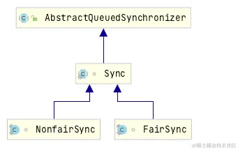
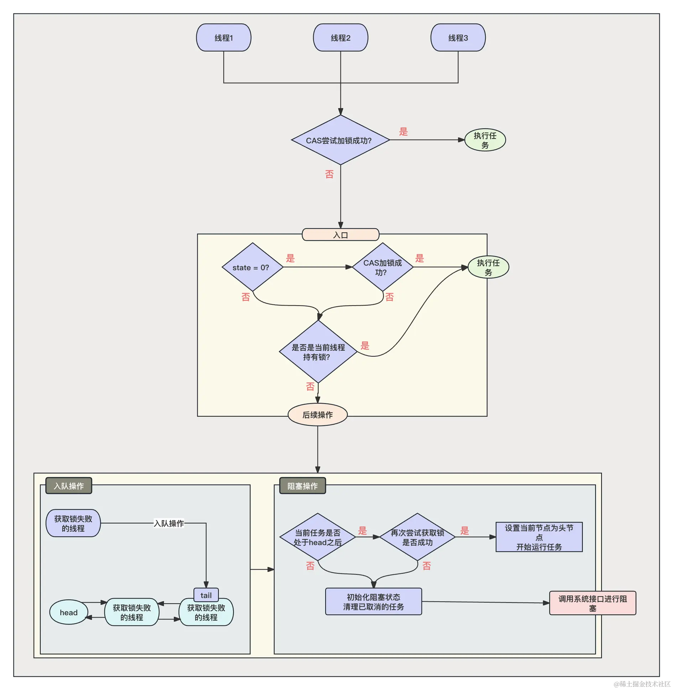
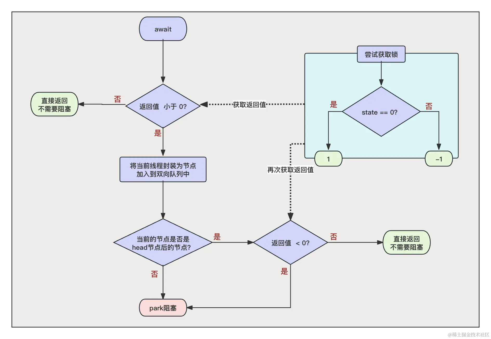
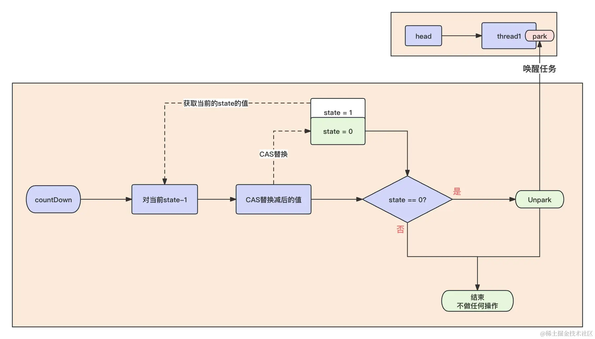

- 01 多线程初阶：解谜多线程世界.md.html
- 02 线程池掌故：管理并发的秘籍.md.html
- 03 锁的奥秘：synchronized 的秘密.md.html
- 04 锁的奥秘：Lock 接口的秘密.md.html
- 05 控制并发流程，并发的巧妙编织.md.html
- 06 ThreadLocal 之珍宝：线程的隐秘宝库.md.html
- 07 CAS：比肩而立的原子魔法.md.html
- 08 容器的魔力：并发世界的宝库.md.html
- 09 结果如何？线程的秘密告白.md.html
- 10 AQS：保证并发安全的终极奥秘（上）.md.html
- 11 AQS：保证并发安全的终极奥秘（中）.md.html
- 12 AQS：保证并发安全的终极奥秘（下）.md.html
- 捐赠
11 AQS：保证并发安全的终极奥秘（中）
在上一章节，我们很详细地结合源码讲解了 ReentrantLock 公平锁对于 AQS 的应用原理。
有了这个基础之后，本章节我们将对 ReentrantLock 非公平锁和 CountDownLatch 这两个的 AQS 的源码做一个具体的分析。
一、ReentrantLock 非公平锁
我们之前学习过 ReentrantLock 非公平锁与公平锁的区别在于，非公平锁不会强行按照任务等待队列去等待任务，而是在获取锁的时候先去尝试使用 CAS 改变一下 State，如果改变成功直接返回加锁成功不用排队，如果改变失败则进入等待队列。
我们简单看一下非公平锁的源码。
如何寻找非公平锁的加锁实现呢？我们回顾一下上一节课，加锁解锁其实是由 AQS 的实现来做的，而 ReentrantLock 中对于 AQS 的实现是 Sync 内部类，Sync 实现了两种加锁方式：非公平锁和公平锁，结构关系如下：

通过这个结果关系，我们能够知道，非公平锁的加锁逻辑在java.util.concurrent.locks.ReentrantLock.NonfairSync#lock。
final void lock() {、
//尝试使用CAS修改state的值，修改成功后就加锁成功
if (compareAndSetState(0, 1))
setExclusiveOwnerThread(Thread.currentThread());
else
//开始加锁
acquire(1);
}
从源码中可以看到，非公平锁一进来就会直接尝试获取一次锁，不会进行太多的判断，这也符合非公平锁的定义，使用 CAS 修改如果成功了，就加锁成功，否则会执行 acquire 的加锁逻辑。
我们在上节课中分析，acquire 方法最终会调用到本身实现的 tryAcquire：
protected final boolean tryAcquire(int acquires) {
return nonfairTryAcquire(acquires);
}
进入到 nonfairTryAcquire 的逻辑：
final boolean nonfairTryAcquire(int acquires) {
final Thread current = Thread.currentThread();
int c = getState();
if (c == 0) {
//直接尝试CAS加锁
if (compareAndSetState(0, acquires)) {
setExclusiveOwnerThread(current);
return true;
}
}
//可重入锁
else if (current == getExclusiveOwnerThread()) {
int nextc = c + acquires;
if (nextc < 0) // overflow
throw new Error("Maximum lock count exceeded");
setState(nextc);
return true;
}
return false;
}
在这里可以看到，它的加锁逻辑与公平锁很相似，但是与公平锁不同的是：
- 公平锁当发现 state = 0 也就是没有任务占有锁的情况下，会判断队列中是存在等待任务，如果存在就会加锁失败，然后执行入队操作。
- 而非公平锁发现 state = 0 也就是没有任务占有锁的情况下，会直接进行 CAS 加锁，只要 CAS 加锁成功了，就会直接返回加锁成功而不会进行入队操作。
我们从源码中就能够直接看出来所谓的公平锁和非公平锁的实现方式的区别。非公平锁的解锁方式与公平锁的解放方式一致，不做重复介绍。
我们使用一个流程图来彻底解释非公平锁的实现逻辑：

二、 CountDownLatch
与 ReentrantLock 相同的是，我们同样可以在 CountDownLatch 中寻找到 AQS 的实现类 Sync。没错，CountDownLatch 的实现也是基于 AQS 来做的。
在学习其实现原理前，先回顾一下 CountDownLatch 的使用：
public class CountDownLatchTest {
public static void main(String[] args) throws InterruptedException {
CountDownLatch countDownLatch = new CountDownLatch(10);
for (int i = 0; i < 10; i++) {
new Thread(() ->{
try {
System.out.println("线程：" +Thread.currentThread().getName() + "开始执行。");
Thread.sleep((long) (Math.random() + 10000));
System.out.println("线程：" +Thread.currentThread().getName() + "执行完成.");
} catch (InterruptedException e) {
e.printStackTrace();
}finally {
countDownLatch.countDown();
}
}).start();
}
System.out.println("开始等待10个线程都完成任务...");
countDownLatch.await();
System.out.println("线程全部执行完毕");
}
}
可以看到，在初始化 CountDownLatch 的时候，我们传递了 10，然后开启了 10 个线程执行任务，每一个线程执行完毕之后都会调用 countDownLatch.countDown(); 来进行递减操作。我们在主线程调用 countDownLatch.await(); 来等待 CountDownLatch 变为 0 后，它会解除阻塞继续向下执行！
所以，我们分析 CountDownLatch 对于 AQS 的使用应该从以下几个方面进行：
- CountDownLatch 初始化的时候，传递的 10 是什么意思？
- await 方法做了什么？
- countDown 方法做了什么？
我们按照问题的顺序逐个分析。
1. 初始化的时候做了什么？
进入到初始化的源码中：
public CountDownLatch(int count) {
if (count < 0) throw new IllegalArgumentException("count < 0");
this.sync = new Sync(count);
}
从源码中看到，初始化的时候，它将我们传递的数量，传递到了 Sync，上文我们了解到，Sync 是 AQS 的实现子类，所以我们从源码层面上证明了 CountDownLatch 的实现一定与 AQS 有关。
我们进入到 Sync 中查看它是如何运用这个 count 的：
Sync(int count) {
setState(count);
}
可以看到，Sync 只做了一件事，就是将 count 保存到了 AQS 的 state 中，比如我们传递的参数是 10，那么此时 AQS 中 state 的值也是 10。
2. await 方法做了什么？
了解了初始化方法之后，我们知道了此时 state 的值为 10，那么我们进入到 await 中，查看它是如何来进行阻塞线程的：
public void await() throws InterruptedException {
sync.acquireSharedInterruptibly(1);
}
可以看到，阻塞也是借助 AQS 来做的，我们继续：
public final void acquireSharedInterruptibly(int arg)
throws InterruptedException {
if (Thread.interrupted())
throw new InterruptedException();
//尝试获取锁
if (tryAcquireShared(arg) < 0)
//获取失败则对任务进行入队和阻塞
doAcquireSharedInterruptibly(arg);
}
我们先分析 tryAcquireShared：
java.util.concurrent.CountDownLatch.Sync#tryAcquireShared
protected int tryAcquireShared(int acquires) {
return (getState() == 0) ? 1 : -1;
}
注意，此时 state 的数量为 10，所以这里应该返回的是 -1。我们继续看 doAcquireSharedInterruptibly ：
private void doAcquireSharedInterruptibly(int arg)
throws InterruptedException {
//创建一个节点 将节点加入到等待队列
final Node node = addWaiter(Node.SHARED);
boolean failed = true;
try {
for (;;) {
//获取当前节点的前置节点
final Node p = node.predecessor();
//如果前置节点是头节点
if (p == head) {
//再次尝试判断state的值是否为0
int r = tryAcquireShared(arg);
if (r >= 0) {
//如果state的数量为0 则r = 1, 开始讲当前节点设置为头节点 并清理废弃节点
setHeadAndPropagate(node, r);
//清理已经执行完的节点
p.next = null;
failed = false;
//返回尝试成功
return;
}
}
//阻塞
if (shouldParkAfterFailedAcquire(p, node) &&
parkAndCheckInterrupt())
throw new InterruptedException();
}
} finally {
if (failed)
cancelAcquire(node);
}
}
我们分析上述源码，当 state 的值不为 0 的时候，证明 CountDown 还没有释放完毕，此时应该阻塞，先将当前节点加入到等待队列，然后同 ReentrantLock 一样，在阻塞之前也会先判断自己是不是 head 的下一个节点，如果是的话会再次尝试判断一下 state 是不是等于 0 了，如果此时等于 0 了，就不用阻塞了，可以直接返回。
此时如果 state 依旧不为 0，则开始与 ReentrantLock 一样调用 park 进行阻塞等待唤醒。
事实上，await 阻塞的逻辑十分简单。我们总结来说，就是当程序调用 await 方法的时候，会判断 state 的值是不是 0，如果不是 0 就阻塞，是 0 就直接返回。
我们使用一张图来解释一下这个流程：

至于为什么会存在一个队列，我们之前在介绍 CountDownLatch 的时候介绍了一种“多等一”的场景（开发人员等待产品经理 PRD 的场景），每一个线程都会调用 await 等待，这里多个等待的任务就会进入到队列中。
3. countDown 方法做了什么？
直接进入到源码：
public void countDown() {
sync.releaseShared(1);
}
CountDownLatch 的 countDown 也是基于 AQS 来做的，我们进入到 AQS 的实现类java.util.concurrent.CountDownLatch.Sync#releaseShared中：
public final boolean releaseShared(int arg) {
if (tryReleaseShared(arg)) {
doReleaseShared();
return true;
}
return false;
}
我们这里分为两步源码进行解读了。
先行分析 tryReleaseShared（注意，arg 的值默认为 1）java.util.concurrent.CountDownLatch.Sync#tryReleaseShared：
protected boolean tryReleaseShared(int releases) {
for (;;) {
//获取当前的state的值
int c = getState();
//如果此时state的值为0，证明CountDownLatch已经被释放了，所以也没必要解锁释放队列中的任务了，直接返回false
if (c == 0)
return false;
//将当前的state的值减1
int nextc = c-1;
//cas将当前减1的值替换到state中，如果替换失败，因为本逻辑是一个死循环，所以替换失败会重新再来一遍逻辑
if (compareAndSetState(c, nextc))
//当state - 1 = 0的时候，证明需要唤醒等大队列中的任务了，所以返回true，否则不需要唤醒任务，返回false
return nextc == 0;
}
}
tryReleaseShared 的逻辑也是比较简单的，主要就是针对于 state 进行 -1 操作，当减 1 完成后，如果 state 的值等于 0，证明 CountDownLatch 的计数已经完成了，需要将此时 await 阻塞在队列中的任务唤醒，于是当 tryReleaseShared 返回 true 之后，doReleaseShared 将唤醒任务：
private void doReleaseShared() {
for (;;) {
Node h = head;
if (h != null && h != tail) {
int ws = h.waitStatus;
if (ws == Node.SIGNAL) {
if (!compareAndSetWaitStatus(h, Node.SIGNAL, 0))
continue;
//唤醒head节点的下一个节点的阻塞
unparkSuccessor(h);
}
else if (ws == 0 &&
!compareAndSetWaitStatus(h, 0, Node.PROPAGATE))
continue;
}
if (h == head)
break;
}
}
doReleaseShared 方法会获取当前等待队列中的头节点，然后调用 unparkSuccessor 方法将 head 节点的下一节点解除阻塞，进而完成对于 await 的唤醒。
我们使用一张图来简单解释一下 countDown 方法：

总结来说，countDown 方法主要就是对 AQS 中 State 的值进行 -1 操作，当 State 的值为 0 的时候，就开始唤醒等待队列中的任务。
三、总结
在本章节中我们对前面所学的 ReentrantLock 非公平锁和 CountDownLatch 进行了深入源码的分析，其本质还是对于 state 的操作。你可以尝试分析一下我们前面所学的 Semaphore 对于 AQS 的使用，看一下它是如何做到基于“许可证数量”来进行控制任务数量的。
在下一章节中，将带领大家学习一个较难的 ReentrantReadWriteLock 对于 AQS 的实现，希望大家认真熟悉上一章节和本章节对于 AQS 的分析，为下一章节打下基础。
© 2019 - 2023 Liangliang Lee. Powered by gin and hexo-theme-book.